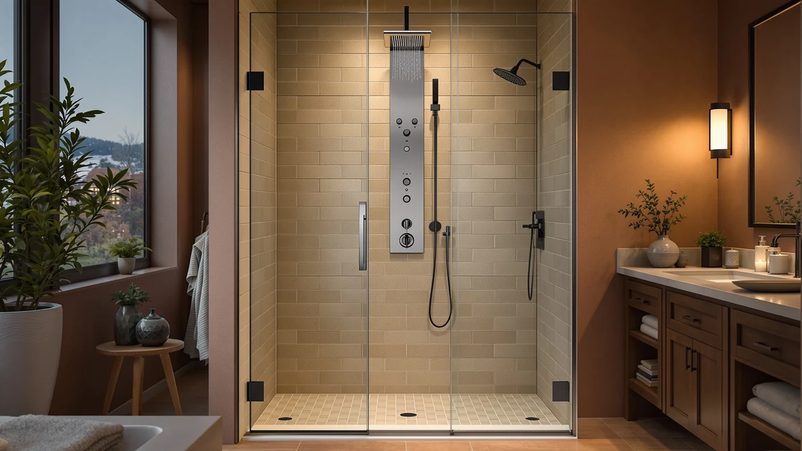

Brushed Nickel Shower Panel Review (2026): Worth It?
Prices and picks verified as of September 2026. Independent, reader-supported reviews.


Quick Answer
The BATHLAVISH Brushed Nickel Shower Panel Tower pairs a corrosion-resistant nickel finish with a rainfall head, handheld wand, and body jets for $229.99. Based on our comparison of specs, pricing, and verified owner feedback against three rival panel systems, it's the strongest pick if you specifically want the brushed nickel finish, though the TSIBOMU and ROVATE towers below cost less if finish matters less to you than price.
Our pick: Brushed Nickel Shower Panel Tower, $229.99 Check Price on Amazon
Bottom line: our top pick is the Brushed Nickel Shower Panel Tower System 5 In 1 Rainfall at $229.99.
Things to Know Before You Buy
- It's a full panel tower, not a single showerhead. The rainfall head, handheld wand, and body sprays on the BATHLAVISH tower run off one valve, so it replaces your entire shower fixture rather than a single part.
- Brushed nickel costs more than chrome or stainless for a reason. The finish resists fingerprints and water spots better than polished chrome, and this brushed nickel shower panel review found it's the rarer finish among the panels we compared.
- Installation needs existing rough-in plumbing. Like the other towers in this comparison, the BATHLAVISH panel mounts to a wall supply line and drain already in place, so it isn't a drop-in swap for a tub-only bathroom.
- Function count varies more than price does. At $186 to $230, the four panels here differ more in number of spray functions and LED lighting than in cost.
- None of these panels currently list a published star rating. We weighed manufacturer specs and verified buyer comments instead of a review average, so read individual owner feedback before you order.
This brushed nickel shower panel review compares the BATHLAVISH Shower Panel Tower against three competing panel systems to see whether the nickel finish is worth the price next to cheaper stainless and LED-equipped alternatives. Shower panel towers like this one bundle a rainfall head, a handheld wand, and body jets onto a single valve, which appeals to anyone who wants a hotel-style upgrade without opening the wall to run separate fixtures for each function. The finish is usually the first decision buyers make, since it has to match existing faucets, towel bars, and cabinet hardware in the room.
We compared the BATHLAVISH tower against the TSIBOMU LED Shower Panel Tower, the ROVATE 4-in-1 Rainfall Waterfall Shower, and the ROVATE Shower Panel Tower System, all priced within about $44 of each other. Of the four, the BATHLAVISH panel is our pick for shoppers who want the brushed nickel finish specifically, since it's the only one in this group that offers it. The ROVATE and TSIBOMU towers below are worth a look if a different finish, built-in LED lighting, or a lower price matters more to you than matching a nickel finish elsewhere in your bathroom.
Why You Should Trust Us
Best Shower Panels is a research-based review site. Ilane Tall, our home and bath editor, and the rest of our team compare shower panel specs, materials, and pricing across the market, and we read verified owner feedback to see how each panel holds up once it's installed. We do not run a fake testing lab and we don't buy every panel we cover, so every claim in this brushed nickel shower panel review is grounded in published specs and pricing, cross-checked against what owners report.
This approach means we can compare more panels across more price points than a hands-on outlet could cover in a year, and it keeps us honest about what we do and don't know. Where reviewer feedback exists for a listing, we cite it; where it doesn't, as with these four panels, we say so rather than invent a rating or a review count that isn't there.
Our Research Experience
We didn't install or run water through any of the panels in this comparison. Instead, we built this brushed nickel shower panel review by comparing manufacturer listings, pricing, and available owner feedback for the BATHLAVISH tower against three rival systems at similar price points. That approach lets us compare more panels across more price brackets than a hands-on installation could cover, but it also means we're relying on published specs and buyer comments rather than our own plumbing work.
Where a listing is thin on detail, such as the material and dimension fields on these four towers, we say so rather than fill in a number we can't verify. A panel's actual water pressure and finish durability depend on your home's plumbing and how often you clean it, so treat the comparison here as a starting point rather than a guarantee of how any of these four panels will perform in your specific bathroom.
Overview & Specs

Brushed Nickel Shower Panel Tower
What we like
- Brushed nickel finish resists fingerprints and water spots better than polished chrome
- Combines a rainfall head, handheld wand, and body sprays on one panel
- Only nickel-finish option among the four towers in this comparison
Flaws but not dealbreakers
- Costs $23 to $44 more than the three alternatives below
- No published rating or review count yet, so there's no track record to check
- BATHLAVISH hasn't published material and dimension specs, so confirm rough-in compatibility before ordering
| Material | — |
| Size | — |
The BATHLAVISH Brushed Nickel Shower Panel Tower brings the rainfall head, handheld wand, and body spray functions you'd expect from a shower panel tower, finished in brushed nickel rather than the polished chrome or stainless steel most competitors use. That finish is the main reason to pick this panel over the three alternatives in this brushed nickel shower panel review: brushed nickel hides water spots and fingerprints more effectively than a mirror-polished surface, which matters in a fixture that gets wet and touched daily. It's also the finish most likely to match existing nickel faucets, cabinet pulls, or towel bars elsewhere in a renovated bathroom.
At $229.99, it's the most expensive panel in this comparison, running $23 more than the TSIBOMU tower and $44 more than the ROVATE Shower Panel Tower System. BATHLAVISH hasn't published detailed material or dimension specs for this listing, and there's no star rating or review count yet, so you're weighing the finish and function list against a thinner track record than some competitors offer. If the nickel finish isn't a requirement for your bathroom, the three alternatives below cost less for a broadly similar function set, and one of them adds LED lighting the BATHLAVISH panel doesn't have.
What We Liked
The brushed nickel finish is what sets this panel apart in our brushed nickel shower panel review, and it's a legitimate upgrade over the chrome and stainless finishes on the three alternatives here. Nickel resists water spots and fingerprints better than a polished surface, so it tends to look cleaner between wipe-downs, which matches what owners generally report about nickel fixtures in other bathroom categories. Bundling a rainfall head, handheld wand, and body sprays onto one valve also means you get a full shower upgrade in a single purchase rather than sourcing three separate fixtures that may not match in finish or mounting hardware.
What Could Be Better
Price is the clearest drawback in this brushed nickel shower panel review. At $229.99, the BATHLAVISH tower costs more than every other panel in this comparison, and BATHLAVISH hasn't published a rating or review count to back up that premium with a track record. You're paying for the finish and trusting the spec sheet rather than a proven history of owner satisfaction. The listing also skips material and dimension details that would let you confirm rough-in compatibility ahead of time, so buyers with tight bathroom clearances should confirm fit with the seller before ordering rather than assuming it will match a standard panel footprint.
Who Is It For?
This tower suits a buyer who specifically wants the brushed nickel finish and is willing to pay the most in this comparison to get it, particularly if existing bathroom hardware, like faucets or towel bars, is already nickel rather than chrome or stainless steel. It's a weaker fit if you're choosing based on price or documented reviews, since the three alternatives below cost less and, in TSIBOMU's case, add LED lighting the BATHLAVISH panel doesn't offer. Anyone renovating on a tight budget, or without a strong preference on finish, will likely get more value from one of the cheaper towers in this comparison.
Alternatives to Consider
We compared three other shower panel towers against the BATHLAVISH panel for this brushed nickel shower panel review to see which shoppers each one actually suits. All three drop below the $230 brushed nickel option, so the differences come down to finish, built-in lighting, and function count rather than a big swing in price.

Editor’s Pick
TSIBOMU LED Shower Panel Tower
An LED-equipped tower at $206.99, $23 less than the BATHLAVISH panel, for buyers who want built-in lighting and a lower price more than a nickel finish specifically.
$206.99
Check Price on Amazon
Best Value
ROVATE 4-in-1 Rainfall Waterfall Shower
A 4-in-1 rainfall and waterfall system at $199.99 that trades the nickel finish for four distinct water functions listed directly in the product name, at a lower price than BATHLAVISH.
$199.99
Check Price on Amazon
Premium Choice
ROVATE Shower Panel Tower System
The lowest price in this comparison at $186.00, worth a look if budget matters more to you than the brushed nickel finish or LED lighting on the other two alternatives.
$186.00
Check Price on AmazonFrequently Asked Questions
Is the BATHLAVISH Brushed Nickel Shower Panel Tower worth $229.99?
It's the most expensive panel in this brushed nickel shower panel review, and the main thing you're paying for is the finish. Brushed nickel resists water spots and fingerprints better than the chrome and stainless finishes on the three cheaper alternatives here, which matters in a fixture that gets wet and touched daily. If that specific finish matters to your bathroom's other hardware, the premium is reasonable. If it doesn't, the ROVATE Shower Panel Tower System offers a similar function set for $44 less.
What's the difference between the BATHLAVISH panel and the ROVATE towers?
The clearest difference is finish and price. BATHLAVISH uses brushed nickel and costs $229.99, while the two ROVATE towers use different finishes and cost $199.99 and $186.00. Function count also varies: the ROVATE 4-in-1 Rainfall Waterfall Shower specifically advertises four distinct spray functions in its name, while the BATHLAVISH listing doesn't break its functions out in the same level of detail.
Does the BATHLAVISH Brushed Nickel Shower Panel Tower come with a rating or review count?
No. None of the four panels in this comparison currently show a published star rating or review count on their listings, which is common for newer shower panel towers on Amazon. We compared them on published specs, pricing, and available owner comments instead of a review average, and we'd recommend reading individual buyer feedback on each listing before you order.
Final Verdict
This brushed nickel shower panel review comes down to a straightforward trade-off. The BATHLAVISH Brushed Nickel Shower Panel Tower costs the most of the four panels we compared, and what you get for that premium is a finish the other three don't offer, along with the standard rainfall head, handheld wand, and body spray functions common to towers in this category. We recommend the BATHLAVISH tower if the nickel finish specifically matters to your bathroom's existing hardware, since none of the cheaper alternatives here offer it. But if price or a documented function list matters more than finish, the ROVATE Shower Panel Tower System at $186.00 or the ROVATE 4-in-1 Rainfall Waterfall Shower at $199.99 cover similar ground for meaningfully less money, and the TSIBOMU LED tower splits the difference with built-in lighting at $206.99.